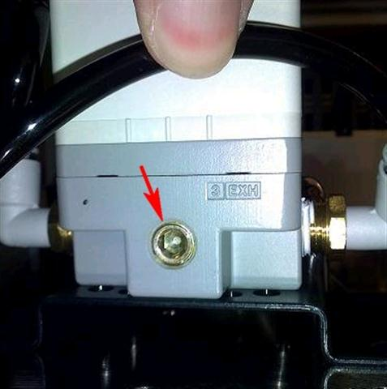
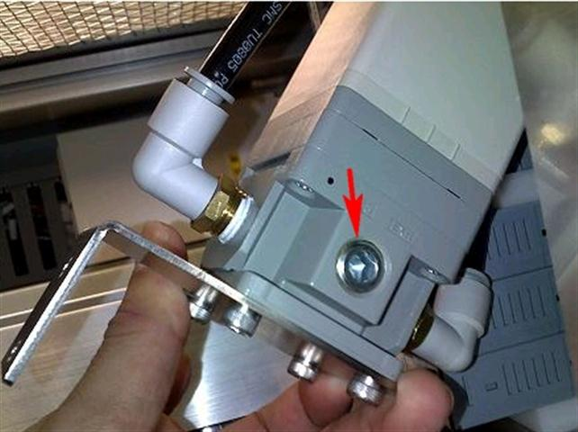
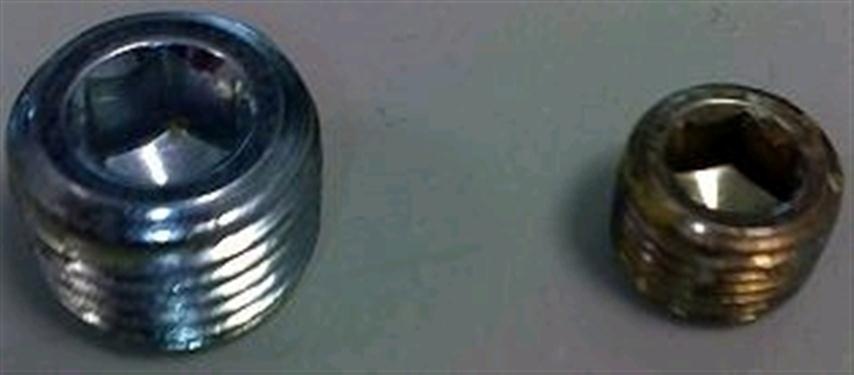

Service History
Subject: XAP-NS7080W S/N121401 EP regulator issue
Handler Model: NS-7080W(S/N: 121401)
Controller: RC520
Date: 23 Aug 2010
Symptom
Found out function on EP regulator for contact force and high contact force abnormal.
During AutoContact Height unable to pickup device from Input Shuttle
High Contact force for Index Arm is noisy.
No purge air release from EP after Autocontact Height completed.
Layout kit still have air in the compliance cylinder buffer after AutoContact Height completed.
Action
Found out the EP regulator used for contact force was not faulty.
But very unusual thing i found out. I found out behind the EP regulator, there is a exhaust port and block by set screw.
I compared with other handlers, the exhaust port at the EP regulator for both High contact force and compliance unit.
Once i remove both set screws behind, the compliance air can be release after handler finish cycle and high contact force noise become lesser during testing.
|
 |
 |
|
 |
|
Model for contact force EP regulator is ITV-1000 and High contact force EP regulator is ITV-2000.
Difference on the latest ITV-1000 and 2000 front part do not have set screw.
I had compared previous handler, all EP regulator for contact force and high contact force do not have set screw at the exhaust port.
Please check with EPSON WHY s/n: 121401 come installed with the set screws. I really don't understand.
If the set screws are not remove, the air will be retained inside the compliance unit and if handler convert to other packages customers will have problem as the index pickup height on shuttle will be incorrect.
30 Aug 2010 email from Hidaka
Set screw of EP regulator:
1. Front side ( see number of display)
This is specification of supplier. So, it is correct.
2. Rear side.
When it has set screw, it is mistake.
When we have running device before shipment, the handler did not have any problem and we did not find the problem.
Note:
Front side: The purpose of pressure gauge port
(Without screw means it has cover the port inside.)
Rear side: Exhaust port
Cause
2 Setscrews were not removed(exhaust port) from behind of EP regulator causing EP regulator error.
Remarks
SPEL Output to trigger EP regulator:
NS-6000: Output Bit 0 to 9 in DU1
NS-7000: Output Bit 0 to 9 in DU1
NS-8000: Output Bit 240 to 249